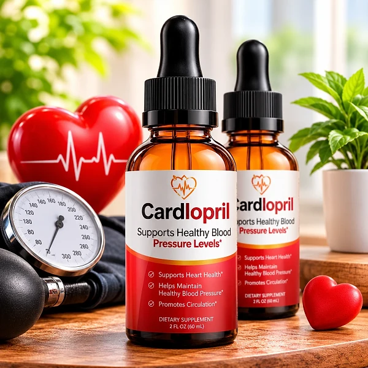
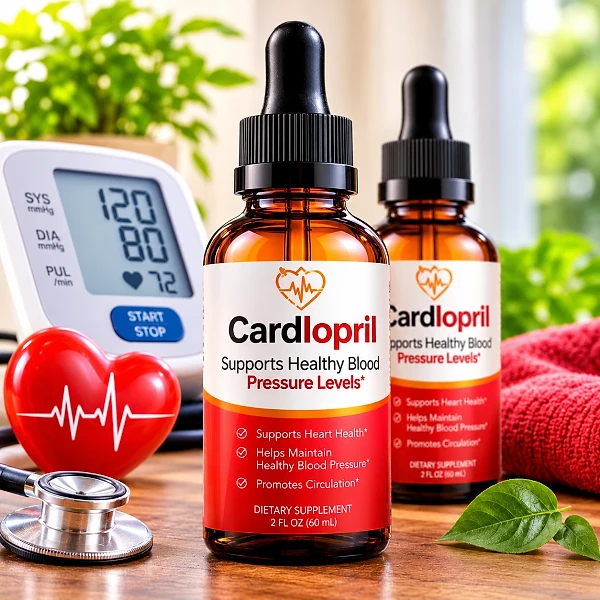
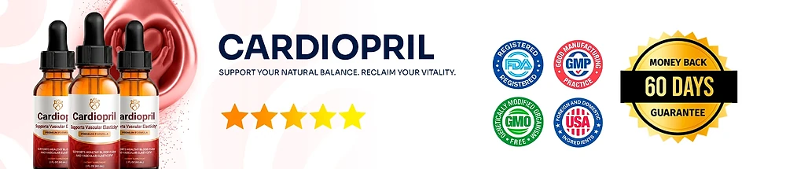

What Is Cardiopril And How Does It Work?
Cardiopril is a dietary supplement in liquid dropper form, labeled "Supports Vascular Elasticity" and "Supports Healthy Blood Flow". According to the official website, it is developed for oral use and marketed to provide nutritional support for heart health, healthy blood pressure, and overall cardiovascular wellness.
The formula pairs one mineral with a blend of botanicals, nutrients, and amino acids. The label shows Selenium (as selenium amino acid chelate) and a 180 mg proprietary blend of 13 ingredients, including Organic Lemon Extract, Magnesium Citrate, Ginkgo Biloba, Lion's Mane, Alpha GPC, and Coenzyme Q-10, plus Vinpocetine, NAC, L-Glutathione, GABA, and L-Carnitine.
How is it meant to work? The official website says the blend is designed to preserve the elasticity of arteries and blood vessels and to support a free, healthy flow of blood. It describes Magnesium as helping the vessel walls relax, Ginkgo Biloba as supporting microcirculation, and Coenzyme Q-10 as the cellular fuel the heart uses to pump.
Several of these ingredients are well known in circulation formulas. Magnesium contributes to normal muscle function, Ginkgo Biloba has been studied for blood flow, and Coenzyme Q-10 takes part in energy production inside cells, including heart cells. The website also shows a list of scientific references, while noting that the company is not endorsed by those organizations.
Results are not guaranteed. The official disclaimer states that testimonials are not intended to represent or guarantee that anyone will achieve the same results, and the label is clear that the product is not intended to diagnose, treat, cure, or prevent any disease.
Each bottle contains 60 ml (2 oz), which the label lists as 30 servings of 2 ml. Cardiopril is distributed by Instituto Experience in Lakeland, Florida, and the label says it is made in the USA with globally sourced ingredients in an FDA-registered facility.
Cardiopril is a dietary supplement. It does not replace a balanced diet, physical activity, blood pressure checks, prescribed treatment, or advice from your doctor.
Cardiopril Ingredients
The official website shows the full Supplement Facts panel, so buyers can review the formula before ordering. One serving (2 ml) provides:
Selenium (4 mcg, 7% DV): a trace mineral that contributes to the protection of cells from oxidative stress.
Organic Lemon Extract: described by the brand as an antioxidant shield for the arteries.
Magnesium Citrate: a mineral involved in normal muscle function, which the brand links to relaxed vessel walls.
Ginkgo Biloba Extract: a traditional botanical studied for circulation and microcirculation.
Coenzyme Q-10: a compound used by cells, including heart cells, to produce energy.
Lion's Mane and Alpha GPC: ingredients the brand connects to cell integrity and nerve signaling.
The blend also contains Vinpocetine, Raspberry Ketone, N-acetyl L-Cysteine (NAC), L-Glutathione, GABA, L-Tryptophan, and L-Carnitine, for a total of 180 mg per serving, so the individual amount of each ingredient is not disclosed. The liquid base is vegetable glycerin, purified water, natural flavors, citric acid, potassium sorbate, and sodium benzoate. The label also states that the product is made in an FDA-registered facility.
Cardiopril Side Effects
According to the official FAQ, Cardiopril is formulated with safe, high-quality natural ingredients. As a precaution, the same FAQ recommends consulting your doctor before starting if you are pregnant, nursing, under 18, or have a pre-existing medical condition, especially circulatory, heart, or blood pressure issues.
The label adds clear cautions: do not exceed the recommended dose. Pregnant or nursing mothers, children under 18, and anyone with a known medical condition should consult a physician before using it. Keep it out of reach of children and do not use it if the safety seal is damaged or missing.
Some ingredients deserve extra attention. Ginkgo Biloba and Coenzyme Q-10 may interact with blood thinners and other medications that affect clotting. Vinpocetine is an ingredient that the U.S. Food and Drug Administration has advised women who are pregnant, or who could become pregnant, not to take.
Because the product is aimed at blood pressure and circulation, anyone who already takes medication for blood pressure or the heart should speak with a doctor before adding it, and keep checking blood pressure as advised. If you notice any discomfort, dizziness, or unusual reaction, stop using the product and speak with a healthcare professional.
Cardiopril Dosage
The suggested use on the label is simple: shake well before use, then take 1 ml by mouth twice daily, or as recommended by your health care professional. The label lists the serving as 2 ml, and each bottle holds 30 servings.
The official FAQ explains that you can place the liquid directly in your mouth and swallow it, and that splitting the dose into two moments is meant to keep the ingredients working consistently throughout the day. A morning and an evening dose with your usual routine make the habit easier.
The label states plainly: do not exceed the recommended dose. Taking more than directed does not make the formula work faster, and it raises the chance of unwanted effects, especially for people who take other supplements or medications.
The official website does not promise a specific timeline, and its disclaimer says individual results vary. A dropper supplement works best alongside balanced meals with less salt, regular physical activity, good sleep, stress management, and regular blood pressure checks with your doctor.
Store the bottle in a cool, dry place, away from heat, light, and humidity, to preserve freshness. If you take medication or have a medical condition, ask your healthcare provider before starting Cardiopril.
Cardiopril – Refund Policy
Cardiopril is covered by a 60-Day Money Back Guarantee, counted from the date of purchase, according to the official website. The order page describes it as "no questions asked", while the refund policy page lists specific rules, so it is worth reading both before ordering.
Minimum trial: the policy asks you to use the product for at least 30 days and to begin the return process within 60 days of your purchase date.
Step 1 – Request the authorization code: email the support team at contact@customercs.com, the address shown on the website and on the label. The label also lists the phone number +1 (507) 448-8190.
Step 2 – Return the bottles: the policy says only sealed bottles are eligible for a refund, return shipping is the customer's responsibility, and the original shipping or customs costs are not refunded. A 20% restocking fee is deducted from the refund amount.
Step 3 – Refund: once the returned items are received and verified, the refund goes to the original payment method, and banks may need 5 to 10 business days to show it. You receive a confirmation email when the process is complete.
Orders are processed by BuyGoods. Read the full policy on the official website before ordering, as its terms are stricter than the short guarantee text on the order page.
Cardiopril Customer Reviews
-
Michael Thompson — Houston, TexasVerified Purchase – 6 Bottles
“If it wasn't for Cardiopril, I'd still be struggling with my blood pressure... and even considering more drastic measures... But thank goodness I didn't have to do any of that, because just two weeks into taking Cardiopril, I began to see my blood pressure stabilize and my energy levels soar. Managing my circulation has never been this easy and straightforward!”
-
Abigail Rodriguez — Chicago, IllinoisVerified Purchase – 6 Bottles
“I was totally discouraged about my blood pressure, dealing with constant spikes and feeling tired all the time. It got to the point where I was afraid to enjoy a meal. But then I started on Cardiopril, and day by day, my blood pressure became more balanced... I even noticed my stress levels diminishing, without those sudden urges I'd been battling... And I swear, it felt like I regained control of my health in just 3 weeks!”
-
Lauren Rio — Seattle, WashingtonVerified Purchase – 6 Bottles
“I was about to give up on finding something that actually worked for managing my blood pressure, and then Cardiopril showed up... Oh, what a relief!!! My blood pressure readings are now consistently in the healthy range, and I feel so much more energetic. I can hardly believe it, it's truly life-changing.”
Cardiopril – Where To Buy
Cardiopril is sold through its official website, and orders are processed by BuyGoods, the retailer named on the checkout. The official website does not point buyers to Amazon, eBay, Walmart, or any other marketplace.
Bottles sold by unknown third parties may look the same, but there is no way to confirm their origin or how they were stored, which raises real concerns about quality and safety. Purchases made outside the official source may not be covered by the 60-Day Money Back Guarantee.
That is why most buyers prefer to order Cardiopril directly from the official website. Going to the source means getting the authentic original product, with access to the support team and the full guarantee, including the written refund steps described above.
Before completing your order, make sure you are on the official Cardiopril website to avoid counterfeit products. Checking the address before you pay, and seeing BuyGoods named at checkout, takes only a moment and helps protect your order.
To ensure you’re getting the authentic product, most users choose to visit the official website.
Is Cardiopril A Scam?
Based on the official website, Cardiopril does not appear to be a scam. It is a real dietary supplement in liquid form, sold through BuyGoods, an established retailer, and designed to support healthy blood flow, vascular elasticity, and cardiovascular wellness with regular use.
The website publishes the full label with every ingredient, a support email, a refund policy with clear steps, a list of scientific references, and the name and city of the distributor. The label adds a phone number and states that the product is made in an FDA-registered facility.
There are inconsistencies to keep in mind. The sales page speaks of "6 vital nutrients", while the FAQ and the label list Selenium plus a 13-ingredient blend sharing only 180 mg. The order page promises a refund "no questions asked", while the policy limits refunds to sealed bottles with a 20% restocking fee. The sales page also lists bonus guides about blood sugar, nerves, and weight that seem unrelated to this product.
The sales page uses bold language about restoring "youthful elasticity" to the arteries, countdown timers, and "while supplies last" messages. Treat those as marketing, and judge the product by its label and policies.
For adults who want a simple daily dropper with ingredients traditionally used for circulation, heart energy, and vascular support, Cardiopril may be worth considering, ideally ordered from the official website and discussed with a doctor, especially if you take medication for blood pressure, the heart, or blood clotting.
For those who want to verify product details or check current availability, the official Cardiopril website remains the safest option.

Check Availability On Official Website
